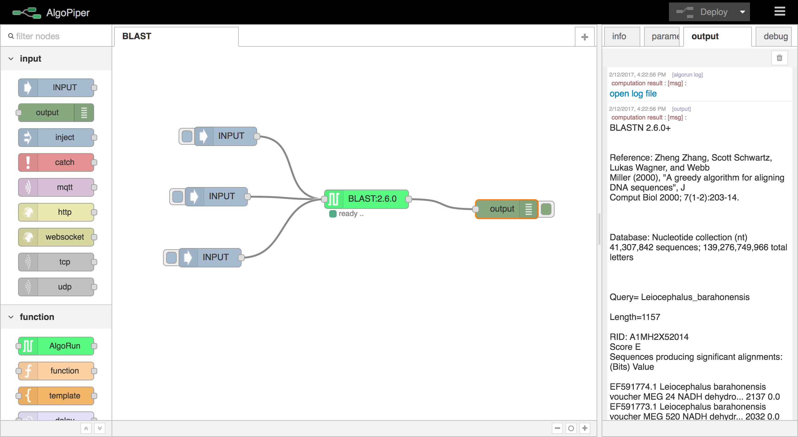
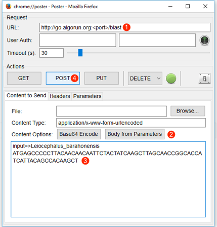
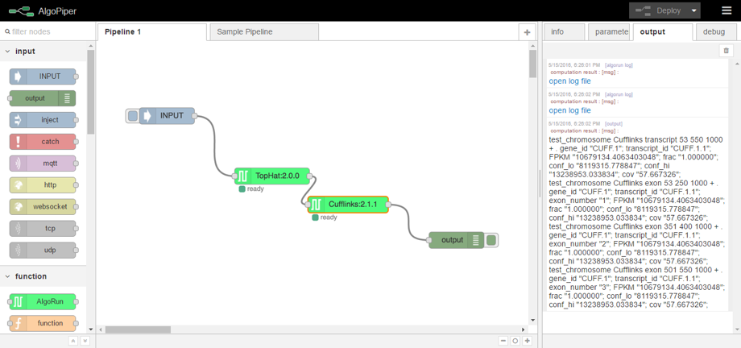
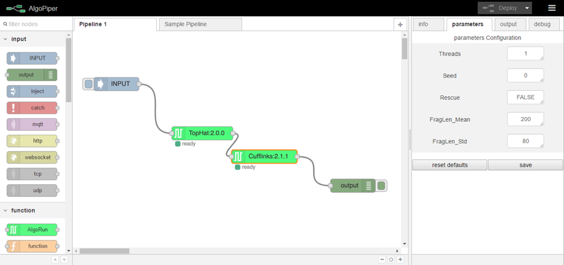
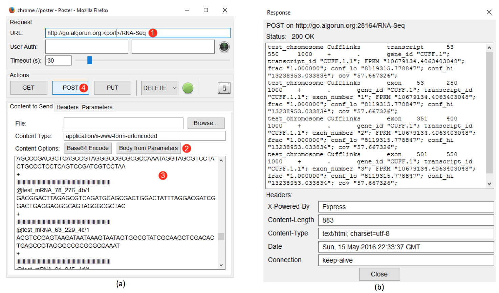

Examples¶
Parallel BLAST Jobs¶
BLAST (Basic Local Alignment Search Tool) is a suite of programs provided by NCBI for aligning query sequences against those present in a selected target database. In this example, we create a BLAST pipeline that can be used to perform parallel search in nucleotide databases using multiple nucleotide queries. Running parallel BLAST queries saves computation time and the created pipeline can be integrated into other software tools through a RESTful web API .
Tip
You can skip reading this section by importing this pipeline directly from AlgoPiper website. Navigate to http://algopiper.org/browse to search for available pipelines. In the search box, type in “BLAST” to find it and launch immediately.
1. Create the Pipeline
- From the palette of nodes on the left, drag an AlgoRun node and drop it into the main workspace. Double click on the node and choose “BLAST” from the dropdown list of available algorithms. Click ok to close the edit dialog. Detailed information about BLAST is shown in the info tab on the right-side panel.
- Drag an input node and drop it to the left of the BLAST node. Include as many input nodes as the number of the parallel jobs you will submit. Double click on each input node and upload the nucleotide query file, or copy and paste the query into the text area ( some inputs to try ). Connect all input nodes to the BLAST node.
- Drag an OUTPUT node and drop it to the right of the BLAST node. Connect the BLAST node to the output node. The below figure shows the complete pipeline with three parallel jobs.
- Hit Deploy on the top-right corner. This initializes the pipeline and the back-end AlgoRun containers then perform the computations.
Figure 7 - BLAST Jobs Pipeline
2. Run the Pipeline
To submit the jobs, click on the small button on the left of each input node. This will pass the nucleotide query from each input node to the BLAST node which will run separate parallel threads for each input. Results appear on the output tab on the right.
Figure 8 - BLAST search results appear on the output tab
Click open log file to open the output in a separate file that you can download. Scroll down to see results from other threads (and open the corresponding log files).
Hint
The output node is used to display the results on the output tab. The BLAST node, and all AlgoRun nodes, log the results to a file even after removing the output node.
3. Integrate the Pipeline
Besides running BLAST jobs manually (by triggering the input node), you can wrap the pipeline in a web API by providing HTTP access to the pipeline functionality.
- Remove the input and output nodes from the pipeline. Keep the BLAST node.
- Drag an http node from the left palette to the left of the BLAST node. Double click on the node to define the request method and the URL. Set the request method to POST and the URL to
/blast. Give it an optional name and click ok. - Drag a function node from the palette to the right of the http node. The function node is used to parse the http request and only relay the nucleotide query to be inputted to the BLAST node. Edit the function node as shown in the code snippet on the right.
Figure 9 - The function node
- Drag an http response node from the left palette to the right of the BLAST node.
- Connect the http node to the function node. Connect the function node to the BLAST node. Connect the BLAST node to the http response node.
- Hit Deploy to initialize the pipeline. The resulting pipeline is shown in the figure below.
Figure 10 - Integrating BLAST pipeline using HTTP POST endpoint
As an example of running the pipeline through the web API, see the Firefox Poster plugin example below. The web API can be used in any other plugins or programming languages.
Figure 11 - Submitting a BLAST job using AlgoPiper API. (1) Type in the URL of the AlgoPiper followed by /blast (2) Choose “Body from Parameters” to send the parameters in the format of form-urlencoded. (3) Type input=<place your input here> in the input area. (4) Click POST to send the request and receive the results.
4. Share the Pipeline
Now, export the pipeline to a JSON format to save to a local file or share it on AlgoPiper website. Use the mouse to select all nodes in the pipeline. From the top-right menu, choose Export and click Clipboard. Copy the JSON text and paste it to a local text file or submit it directly to AlgoPiper website (http://algopiper.org/submit-pipeline).
Figure 12 - Sharing the BLAST Pipeline
Analysis of high-throughput mRNA sequencing (RNA-Seq data) Pipeline¶
Next Generation Sequencing (NGS) enables researchers to study biological systems at a large scale. In this example, we create a pipeline that performs basic analysis of Illumina RNA-seq data using a sample transcriptome with the goal of obtaining expression scores or annotated genes. The pipeline depends on TopHat for alignment and Cufflinks for counting and expression scoring; both are previously packaged with AlgoRun. TopHat was packaged with a test reference file for illustration purpose. To package TopHat with your own genomic reference, refer to the examples folder of AlgoRun repository to re-package TopHat locally with your own reference file.
Tip
You can skip reading this section by importing this pipeline directly from AlgoPiper website. Navigate to http://algopiper.org/browse to search for available pipelines. In the search box, type in “RNA” to find it and launch immediately.
1. Create the Pipeline
- From the palette of nodes on the left, drag an AlgoRun node and drop it into the main workspace. Double click on the node and choose “TopHat” from the dropdown list of available algorithms. Click ok to close the edit dialog. Detailed information about TopHat is shown in the info tab on the right-side panel.
- Drag an AlgoRun node and drop it into the main workspace. Double click on the node and choose “Cufflinks” from the dropdown list of available algorithms. Click ok to close the edit dialog. Detailed information about Cufflinks is shown in the info tab on the right-side panel.
- Drag an input node and drop it to the left of the TopHat node. Double click on the input node and copy and paste the sample input in this link: http://tophat.algorun.org/algorun_info/input_example.txt
- Connect the input node to the TopHat node. Connect the output from the TopHat node to the input of the Cufflinks node.
- Drag an OUTPUT node and drop it to the right of the Cufflinks node. Connect the output of the Cufflinks node to the output node. The below figure shows the complete pipeline.
- Hit Deploy on the top-right corner. This initializes the pipeline and the back-end AlgoRun containers the perform the computations.
Figure 13 - RNA-Seq analysis pipeline using TopHat and Cufflinks
2. Run the Pipeline
To start analysis, click on the small button on the left of each input node. This will pass the sequence reads from the input node to the TopHat node which will automatically pass the results to the Cufflinks node. Results appear on the output tab on the right.
Figure 14 - RNA-Seq analysis pipeline results appear on the output tab
Hover over the first open log file line, it will highlight the TopHat node, indicating that this log file came from the TopHat node. Hover over the second open log file line, it will highlight the Cufflinks node, indicating that his log file came from the Cufflinks node. The output from Cufflinks is printed in the output tab as well.
3. Manipulate Cufflinks Parameters
AlgoPiper interface enables you to change algorithms parameters without re-deploying the pipeline again. Select the Cufflinks node and open the parameters tab from the right. The parameters of Cufflinks are shown in the figure below. Change the FragLen_Mean parameter from the default value of 200 to some other value and click save. This will change the fragment length average of unpaired reads input to your new value. Re-running the pipeline means using the newly saved parameters when Cufflinks module is invoked.
Figure 15 - Changing Cufflinks parameters on-the-go
4. Integrate the Pipeline
Besides running the RNA-Seq analysis manually (by triggering the input node), you can wrap the pipeline in a web API by providing HTTP access to the pipeline functionality.
- Remove the input and output nodes from the pipeline. Keep the TopHat and Cufflinks nodes.
- Drag an http node from the left palette to the left of the TopHat node. Double click on the node to define the request method and the URL. Set the request method to POST and the URL to
/RNA-SeqGive it an optional name and click ok. - Drag a function node from the palette to the right of the http node. The function node is used to parse the http request and only relay the RNA sequence reads to be inputted to the TopHat node. Edit the function node as shown in the code snippet on the right.
- Drag an http response node from the left palette to the right of the Cufflinks node.
- Connect the http node to the function node. Connect the function node to the TopHat node. Connect the Cufflinks node to the http response node.
- Hit
Deployto initialize the pipeline. The resulting pipeline is shown in the figure below.
Figure 16 - Integrating RNA-Seq analysis pipeline using HTTP POST endpoint
As an example of running the pipeline through the web API, see the Firefox Poster plugin example below. The web API can be used in any other plugins or programming languages.
Figure 17 - Submitting RNA sequence reads using AlgoPiper API. (a): (1) Type in the URL of the AlgoPiper followed by /RNA-Seq (2) Choose “Body from Parameters” to send the parameters in the format of form-urlencoded. (3) Type input=<place your input here> in the input area. (4) Click POST to send the request and receive the results. (b): results from running the pipeline via API.
5. Share the Pipeline
Now, export the pipeline to a JSON format to save to a local file or share it on AlgoPiper website. Use the mouse to select all nodes in the pipeline. From the top-right menu, choose Export and click Clipboard. Copy the JSON text and paste it to a local text file or submit it directly to AlgoPiper website (http://algopiper.org/submit-pipeline).
Figure 18 - Sharing RNA-Seq data analysis pipeline